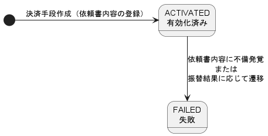
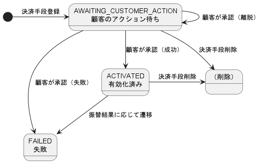

使用支付方式 API 处理银行账户自动扣款
使用支付方式 API 处理银行账户自动扣款
在银行账户自动扣款中，支付方式（Payment Method）表示扣款账户。
每位客户最多可登记 5 个账户。执行支付时指定支付方式 ID，即可向对应账户发起扣款请求。
支付方式状态列表
支付方式可处于以下状态。
| 状态名称 | 状态 | 说明 |
|---|---|---|
| 未激活 | INACTIVATED | 该支付方式尚未生效，执行支付时无法指定。 |
| 等待客户操作 | AWAITING_CUSTOMER_ACTION | 正在等待客户访问リダイレクト先URL（redirect_url）所指向的金融机构验证页面完成验证，并批准将账户信息登记到 fincode。 |
| 已激活 | ACTIVATED | 可以向此支付方式发起扣款请求。 使用申请书登记时，在 fincode 控制面板完成申请书登记后进入此状态。使用 Web 登记时，在客户通过 リダイレクト先URL（redirect_url）完成账户登记后进入此状态。 |
| 失败 | FAILED | 支付方式登记失败，无法使用。 使用申请书登记时，如果填写的内容有问题，就会进入此状态。 |
支付方式状态转换（银行账户自动扣款、申请书登记）
银行账户自动扣款通过申请书登记时，支付方式的状态按以下规则转换。
申请书登记的详情请见此处。
※“－”表示没有对应的结果或操作。

| 操作 | 操作结果 | 操作前状态 | 操作后状态 | 备注 |
|---|---|---|---|---|
| 登记支付方式（登记申请书内容） | 成功 | － | 已激活 | 使用申请书登记时，可在 fincode 控制面板登记。 |
| － | － | 已激活 | 失败 | fincode 通知申请书内容有问题时，转换为此状态。 结果通知 Webhook customers.payment_methods.updated会发出通知。※未登记 Webhook 时，fincode 只会在内部更新状态。 |
| － | － | 已激活 | 失败 | 执行支付后，如果扣款结果中的result_code值为2, 3, 7, 8, 9, E, N中的任一值，则转换为此状态。结果通知 Webhook payments.directdebit.complete会发出通知。※未登记 Webhook 时，fincode 只会在内部更新状态。 |
将银行账户自动扣款申请书寄给三井住友卡公司后，约需 1 个月才能扣款。
申请书的寄送方法请参阅登记账户－申请书登记，送达期限请查看银行账户自动扣款年度日程。
即使申请书未及时送达，也可以发起扣款请求，不过扣款失败的可能性会增加。
即使扣款失败，也会收取支付手续费。
支付方式状态转换（银行账户自动扣款、Web 登记）
银行账户自动扣款通过 Web 登记时，支付方式的状态按以下规则转换。
Web 登记的详情请见此处。
※“－”表示没有对应的结果或操作。

| 操作 | 操作结果 | 操作前状态 | 操作后状态 | 备注 |
|---|---|---|---|---|
| 登记支付方式 | 成功 | － | 等待客户操作 | |
| 客户在跳转目标 URL 上批准登记 | 成功 | 等待客户操作 | 已激活 | |
| 离开页面 | 等待客户操作 | 等待客户操作 | redirect_url_accessed_flag变为1，redirect_url将无法再使用。请重新登记支付方式。 | |
| 失败 | 等待客户操作 | 失败 | redirect_url_accessed_flag变为1，redirect_url将无法再使用。请重新登记支付方式。 | |
| － | － | 已激活 | 失败 | 执行支付后，如果扣款结果中的result_code值为2, 3, 7, 8, 9, E, N中的任一值，则转换为此状态。结果通知 Webhook payments.directdebit.complete会发出通知。未登记 Webhook 时，fincode 只会在内部更新状态。 |
| 删除支付方式 | 成功 | （任意状态） | （删除） |
注意事项
要为银行账户自动扣款接入支付方式 API，请务必先确认以下事项。
Web 登记手续费
登记支付方式（银行账户自动扣款、Web 登记）成功时，除支付手续费以外，还会收取 Web 登记手续费。
详情请见此处
跳转目标 URL 的访问次数限制
执行登记支付方式（银行账户自动扣款、Web 登记）时，会返回包含客户跳转目标リダイレクト先URL（redirect_url）的支付方式对象。
在银行账户自动扣款中，支付方式 API 返回的跳转目标 URL 只能访问一次。如果客户尚未批准登记扣款账户就离开金融机构网页，该支付方式的ステータス（status）会保持为AWAITING_CUSTOMER_ACTION: 顧客のアクション待ち，而跳转目标 URL 将无法再使用。
要判断此情况并进行后续处理，请检查支付方式对象的リダイレクト先URLアクセス済みフラグ（redirect_url_accessed_flag）字段是否为1: アクセス済み。